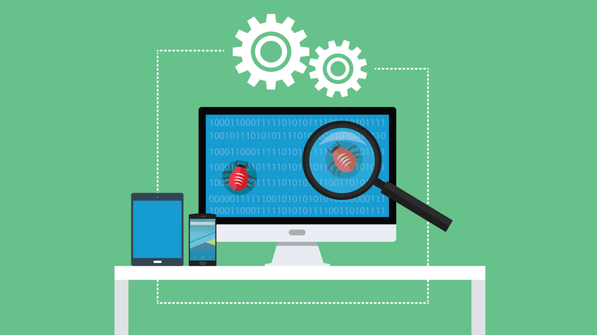
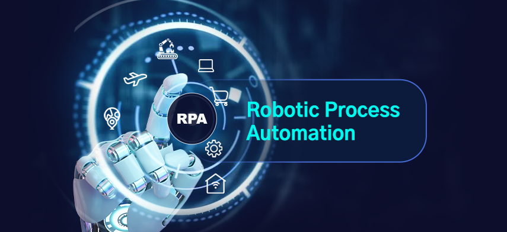

Serviços
Quais os serviços eu ofereço a você?
Qualidade e Testes

Ofereço serviços de Qualidade e Testes Manuais e com Automação para aplicações Web, Mobile e APIs, atuando no Front-end e no Back-end para garantir confiabilidade, desempenho e boa experiência do usuário.
Implemento testes funcionais, de integração, regressão, performance e pipelines com automação para CI/CD.
Ferramentas de Automação com IA:- Microsoft Copilot
- WindSurf
- Tabinine
- OpenAI
- Java
- Python (Playwright e Robot Framework)
- C#
- Javascript e Typescript (Playwright e Cypress)
- Selenium
- jUnit
- TestNG
- SauceLabs e Microsoft App Center
- BDD (Gherkin, SpecFlow e Cucumber)
- Relatório Geral de execuções
- Evidências em PDF, DOCX, CSV e em Vídeos
- Java
- Python (PyTest, Unittest e Selenium)
- Appium
- C#
- jUnit
- TestNG
- SauceLabs e Microsoft App Center
- BDD (Gherkin, SpecFlow e Cucumber)
- Relatório Geral de execuções
- Evidências em PDF, DOCX, CSV e em Vídeos
- Postman
- Rest-assured
- Java
- Playwright
- Insomnia
- Apache jMeter e K6
- Relatório Geral de execuções
- Evidências em PDF e DOCX
- Jira / Jira SaaS / Octane / ALM-HP / Trello (Scrum / Kanban)
- Confluence
- Git, GitFlow / trunk-based
- CI/CD: Jenkins, GitLab CI, GitHub Actions
- Planejamento
- Desenvolvimento
- Execução
- Validação
- Implantação
- Unitários
- Integração
- Ponta a ponta (E2E)
- Carga
- Funcionais
- Regressão
- Exploratórios
- Usabilidade
- Aceitação
- Segurança
- Caixa Branca e Preta
- Segurança
- Performance
- Sistemas
- MySQL
- SQL Server
- Oracle
- PostGreSQL
- MongoDB
- Microsoft Azure
- AWS Cloud
- GIT
- Bitbucket
- Docker
São muitas informações? Sim, porque sou um profissional experiente. Para saber as habilidades completas clique no botão abaixo e vá para a página de Habilidades (Skills).
Automação de Processos - RPA

Desenvolvo automações de processos (RPA) para Web, Mobile e integração de APIs, tanto no front-end quanto no back-end, para otimizar fluxos, reduzir erros e aumentar produtividade.
Construo bots com tratamento de exceções, monitoramento e integração com pipelines e sistemas legados.
Ferramentas de Automação com IA:- Microsoft Copilot
- WindSurf
- Tabinine
- OpenAI
- BotCity
- Java, Python e C#
- Automação com Selenium quando aplicável
- Java, Python e C#
- Appium para automações híbridas
- Conectores HTTP/REST das plataformas RPA
- Postman
- Scripts custom (Python / Node)
- Jira / Trello (Scrum / Kanban)
- CI/CD para bots: Jenkins, GitLab CI
Consultoria
Consultoria em TI para planejamento, governança e execução de projetos, com foco em melhoria de processos, implantação de práticas ágeis e adequação técnica.
Atuo com cronograma, planejamento, desenvolvimento, execução, validação e implantação alinhados ao contexto da equipe e produto.
Ferramentas para gestão de processos:- Jira e Jira SaaS
- Azure DevOps, Jira para backlog e execução
- Confluence para documentação
- Slack / Microsoft Teams / Google Meet para comunicação
- Juniores, Plenos, Product Owners, Gerentes de Projeto, Desenvolvedores...
Mentoria
Mentoria e treinamentos sobre qualidade, testes e automação, com sessões práticas, revisão de código, pair-programming e planos de evolução técnica.
Capacitação do básico ao avançado treinando juniores e plenos.
Temas abordados para mentoria:- Troca de conhecimento e experiência
- Como lhe dar com o ambiente de trabalho
- Planejamento de carreira e evolução técnica
- Boas práticas de desenvolvimento
- As diferenças em ser um profissional Interno e Prestador de Serviço
Automação com Inteligência Artificial

Estou para implantar os serviços de automação com IA utlizando a ferramenta N8N.
Quando estiver pronta, estarei oferecendo serviços com robôs no Telegram, ChatBots, WhatsApp e Marcação de Consultas.
TGO Desenvolvimento Ltda
Além do Linkedin e do Facebook, você pode me contatar através do e-mail abaixo:
📞 (11) 971... ops, contato primeiro por e-mail
✉ tiago.freitas.sp@hotmail.com
📍 Barueri/SP - CEP: 06434-050